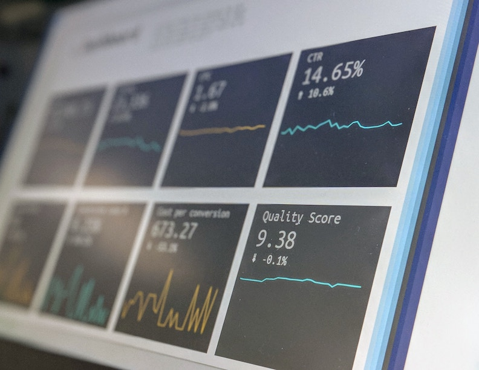

I invite you to explore my journey as a Technical Project Manager with a passion for data analysis.
From spearheading innovative projects to unraveling insights from complex datasets,
I thrive to constantly learn something new from my projects and peers. Join me as I share my projects,
insights, and a commitment to continuous learning in the ever-evolving landscape of data analysis.

Machine Learning Model
Tackled a machine learning endeavor by leveraging Python to process (pandas) and visualize the data (matplotlib) that was used to train the model (sklearn) and tested linear and random forest regression models to plot the most accurate result.
See the Code

Cloud-Based Data Migrations
Led seamless data migration by executing comprehensive cleanup, ETL processes, mapping columns from the legacy system to the new platform, and ensuring rigorous data validation post import.
See the Code

Analytics and Data visualizations
Created a brief collection of some of the reports and dashboards, curtailing visualizations to each client's need in both .xml and .repx file formats built off of SQL views and procedures.
See the Examples
Equifax Case Study
Conducted a comprehensive cybersecurity case study on the Equifax data breach analyzing threat landscapes, attack vectors, and mitigation strategies, resulting in actionable insights and recommendations to bolster organizational defenses against emerging threats.
See the Study